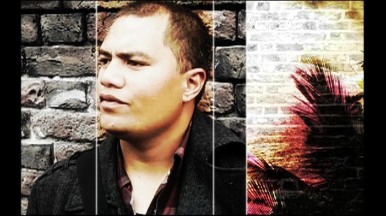
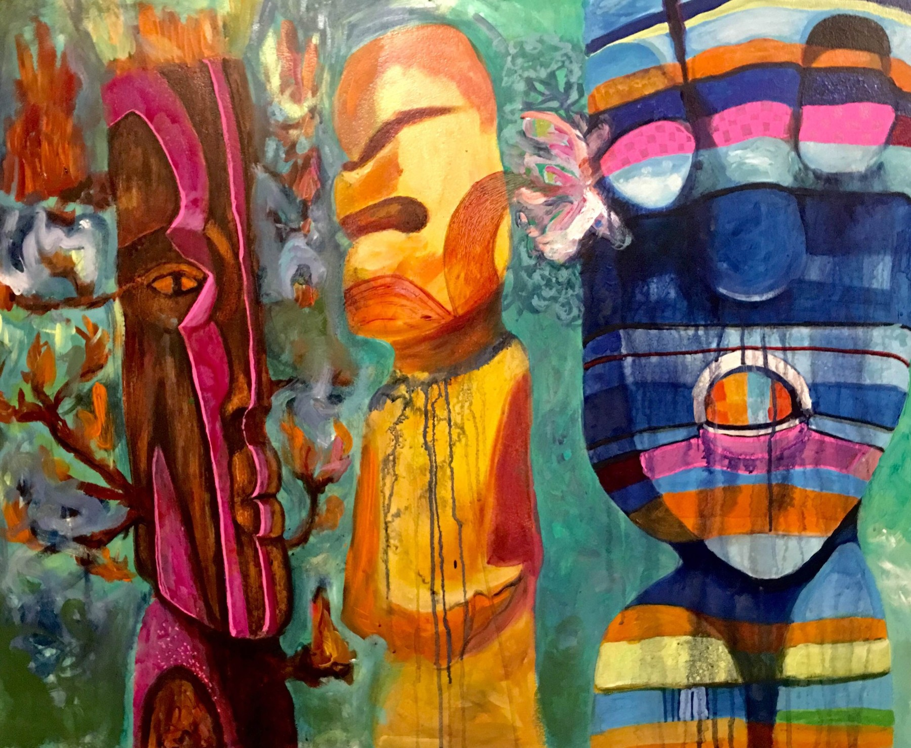
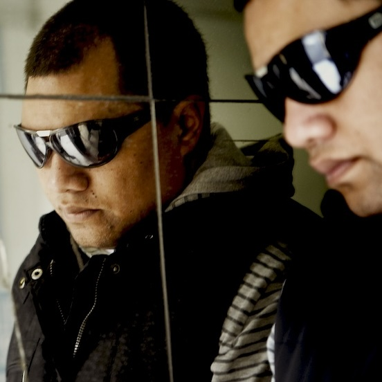
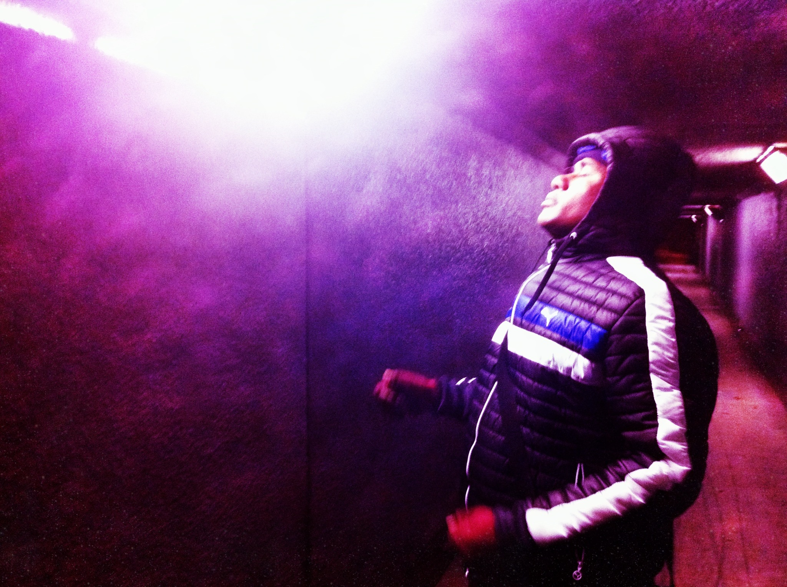

Pressures of Life / Till I Make You Move
- 01Pressures of Life
- 02Till I Make You Move (Instrumental)
For private album listening, contact Gareth Farry.

Seva Hifi is a three-piece creating Pacific psychedelic soul and dub shaped by deep bass rhythm, oceanic space, and urban life. The music moves through memory, pressure, spirit and signal.

Thirteen tracks moving through pressure, memory, blessing and release. Deep bass, machine rhythms, spacious echoes and Pacific soul shaped in Aotearoa.
Mastered by Joshua Llewellyn at Downbeat Mastering.
Music rooted in electronic sound and the liminal soul of imagined future worlds.
Rooted in Aotearoa New Zealand and shaped by Pacific sensibility, the album inhabits the space between city and ocean, spirit and signal, intimacy and distance.
Listen to the original Pressures of Life 7″ vinyl release on Bandcamp, or visit Sugarlicks Studio on SoundCloud.

Born and raised in South Auckland to Niuean parents from Tamakautoga, Baz Suamili began drumming and singing through church and his father’s family band. His music brings Niuean language, Pacific polyrhythms and spiritual roots into dialogue with synthesisers, samplers and drum machines.
Gmuva, also known as Gareth Farry, is an Auckland-based music producer and founder of Sugarlicks, a label centred on electronic soul with a Pacific-meets-global sensibility. As producer of Seva Hifi, he shapes the project’s spacious electronic production, deep bass and beat architecture, and wider sonic vision.

Fijian-born and based in Auckland, Levani Vosasi is one of Aotearoa’s most respected percussionists. Across a wide-ranging career, he has performed with artists throughout New Zealand and alongside international acts including Baaba Maal and the Rolling Stones.
Baz is the project’s vocal and visual centre. Seva Hifi remains a three-piece, with production and percussion shaping one shared sound.
Seva Hifi is seeking the right international label and distribution partners for the 2027 release of Pacific Psychedelic Soul Vol. 1.